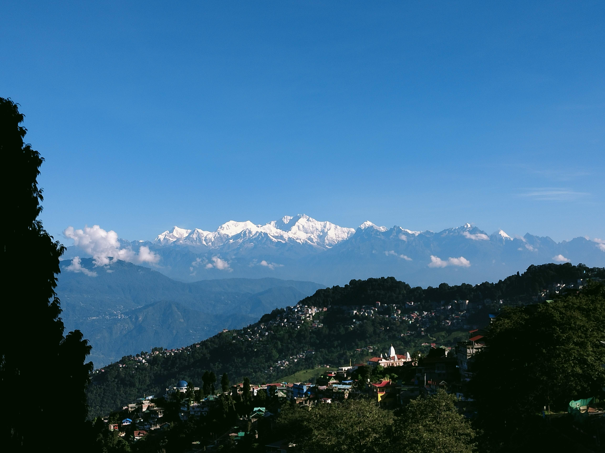
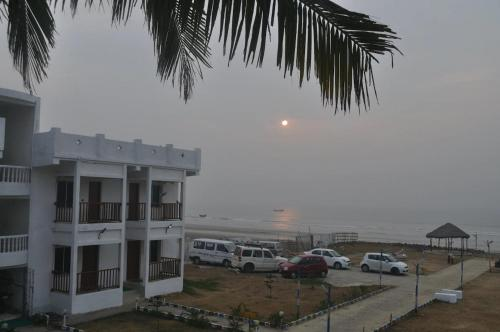

-
From NEET Aspirant to Full Stack Developer: My Journey
Life has a funny way of guiding us, sometimes in directions we never anticipated. After finishing high school, I had my sights set on a career in medicine. I decided to take a drop year to prepare for the NEET exam, dedicating all my time and energy to cracking it. However, things didn't go as planned. Despite my best efforts, the path to becoming a doctor didn't unfold as I had hoped.
At that point, I had a choice to make: either stay stuck in disappointment or pivot and explore new opportunities. That's when I decided to attempt the West Bengal Joint Entrance Examination (WBJEE). Little did I know that this decision would lead me to a completely different but equally rewarding path engineering.
-
Entering the World of Engineering
When I got into an engineering college, everything was new and challenging, but also incredibly exciting. My initial focus was on mastering the basics: Data Structures and Algorithms (DSA), the core concepts of Computer Science, and the course curriculum laid out by the college. These foundational skills are crucial, but something more profound began to stir within me. While DSA is essential, it was the idea of building something of creating something tangible that truly excited me.
I began to see coding not just as a set of instructions to be executed, but as a tool to bring ideas to life. It's like when a layperson walks down the street and sees a stunning car; they might say, “Wow, what a car!” But an engineer looks at that same car and thinks, “I could build something even better.” That's the mindset that started to take root in me.
-
Why Full Stack Development?
The more I delved into the world of coding, the more I realized that I wanted to be that engineer the one who could look at any software or application and say, “I can do this, and I can do it better.” This desire to not just understand but to create led me to Full Stack Development.
Full Stack Development appealed to me because it's the perfect blend of creativity and technicality. It allows you to see the big picture and understand how every piece of the puzzle fits together, from the user interface to the backend logic. The idea of being able to build an entire application from scratch, seeing it come to life, and knowing that you created something functional and meaningful is incredibly fulfilling.
-
The Road Ahead
Now, as I continue my journey, I'm more motivated than ever to push my limits. Every new project, every line of code, and every challenge I encounter is an opportunity to grow and improve. I've come to realize that success isn't always about sticking to the original plan; sometimes, it's about adapting, finding your passion, and going after it with everything you've got.
Choosing Full Stack Development was one of the best decisions I've made, and I'm excited to see where this path will take me. Whether it's building innovative web applications or solving complex problems, I know that I'm on the right track, and I'm eager to continue exploring the endless possibilities that this field has to offer.
Coding Chronicles:
Exploring Close to Home: My Local Adventures:
While my journey as a full-stack developer keeps me busy, there's another passion that drives me—traveling. Although I haven't explored many places yet, the idea of hitting the road, discovering new spots, and immersing myself in different environments excites me deeply.
-
Shantiniketan: A Cultural Retreat

Shantiniketan was my first real taste of travel. Known for its deep cultural roots and connection to Rabindranath Tagore, it's a place that feels like stepping back in time. Walking through the peaceful, tree-lined paths and seeing the blend of nature and art all around, I felt a sense of calm and inspiration. It's a place where creativity seems to flow naturally, and it left me with a newfound appreciation for art and culture.
-
Darjeeling: Twice as Nice
Darjeeling has a special place in my heart, not just because I've been there twice, but because each trip offered something different. The first time was a typical visit—taking in the stunning views of the Mountains, sipping on world-famous tea, and exploring the charming hill town. But the second time, I made the journey on a motorcycle, and that changed everything. The thrill of navigating winding mountain roads with the crisp, cool air rushing past was exhilarating. It wasn't just about reaching the destination; it was about enjoying the journey itself.
-
Mandarmani: A Coastal Escape
Mandarmani was my escape to the sea. The endless stretch of beach and the sound of waves crashing against the shore had a calming effect on me. It's a place where you can disconnect from the hustle and bustle of everyday life and just enjoy the simple pleasures—whether it's a quiet walk along the shore or watching the sunset over the water.
-
The Road Ahead
Though I haven't traveled far and wide, these local adventures have fueled my desire to see more. Each trip, whether to a cultural hub like Shantiniketan or the serene beaches of Mandarmani, has taught me that there's so much to discover, even close to home.
Traveling excites me because it's not just about the places you visit, but the experiences you gather and the memories you create along the way. I'm eager to continue exploring, whether it's new destinations or revisiting old favorites with fresh eyes. There's a whole world out there, and I'm just getting started.
Project Showcase:
As part of my journey into web development, I've been working on projects that not only challenge me but also excite me as I bring ideas to life through code. Here's a glimpse into two projects I've been working on.
-
Sliding Sidebar with HTML and CSS
One of my recent projects was creating a sliding sidebar using just HTML and CSS. The idea was to make a user-friendly sidebar that could slide in and out of view, providing a clean and modern navigation experience.
I used a simple yet clever approach by leveraging the checkbox input element. The checkbox acts as a toggle for the sidebar. When checked, the sidebar slides into view, and when unchecked, it slides out, all smoothly animated with CSS transitions. This project taught me the power of CSS for creating interactive elements without relying on JavaScript, and it was rewarding to see how a few lines of code could enhance the user experience.
-
Portfolio Website in Progress
Currently, I'm working on a more ambitious project: building my personal portfolio website using HTML, CSS, and JavaScript. The goal of this website is to showcase my skills, projects, and experiences in a way that reflects my journey as a developer.
I'm focusing on creating a responsive design that looks great on any device. The website will feature sections like an “About Me” page, a project gallery, and a contact form. I'm particularly excited about integrating JavaScript to add interactive elements, such as dynamic content loading and smooth scrolling effects. This project is a step up from my previous work, and it's helping me deepen my understanding of web development.
Tech Resources: Tools Fueling My Learning Journey:
In the ever-evolving world of technology, having the right tools at your disposal can make all the difference. As I navigate my path toward becoming a full-stack developer, I've discovered several resources that have been invaluable in streamlining my learning process and boosting my productivity. Here's a look at some of the tools that are currently powering my journey.
- ChatGPT is my go-to tool for understanding complex concepts and solving coding problems. It's like having a personal tutor available anytime I need help, making my learning process smoother.
- For creating professional PowerPoint presentations, I rely on Gemma. It helps me design visually appealing slides quickly, allowing me to focus on content rather than formatting.
- Melin AI is a time-saver when I watch educational videos. It converts videos into scripts, letting me review and reference content more efficiently.
- Internshala is where I'm learning full-stack development. The platform's structured courses and hands-on projects are helping me build practical skills in a real-world context.
These tools ChatGPT, Gemma, Melin AI are essential in making my learning journey effective and efficient. They help me stay on track and continuously improve as I progress in full-stack development.